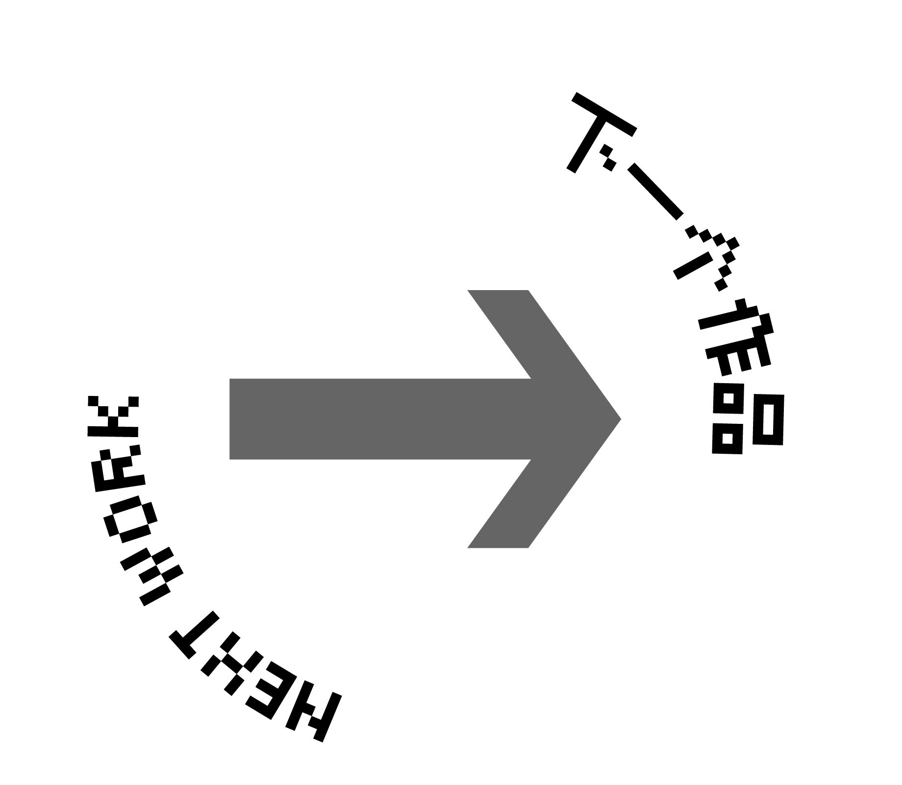
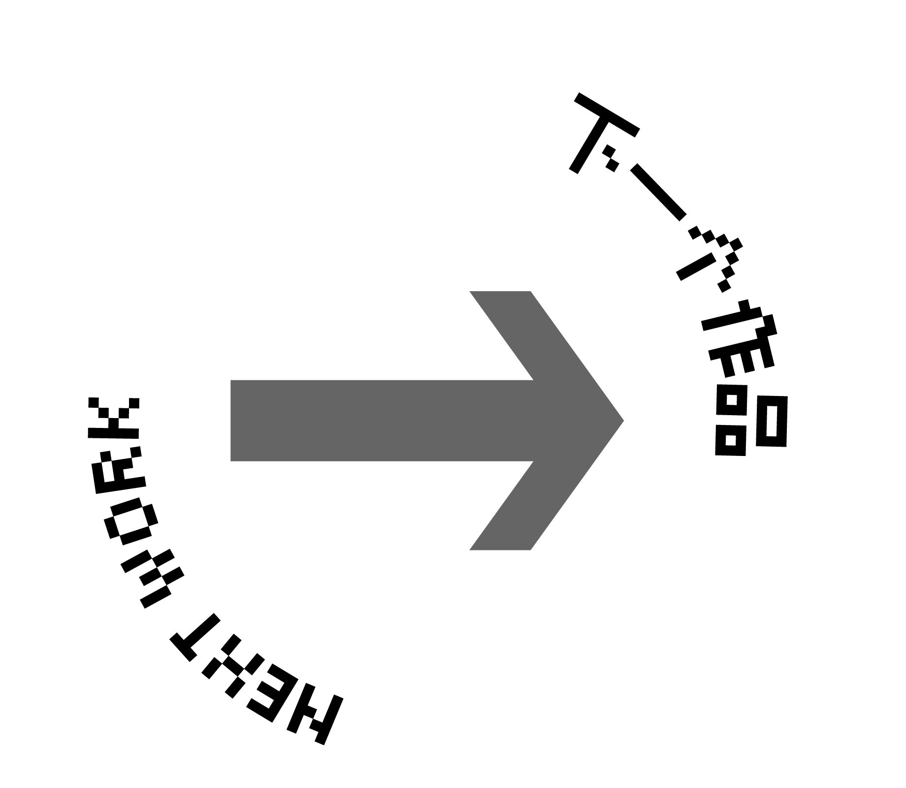

陈龙 Wx/Tel 18121115698
Chen Portfolio (历史 History ) (灵魂 Ghost) (经济 Economy)
 

"繁花旧梦"是一个项目，讲述了上海一位开馄饨店的老奶奶坚守在市区狭隘破旧的纸片楼，不愿意搬到郊区而面临孤独的故事。 这个项目通过纪录片和书籍设计的方式，呈现老奶奶和她的馄饨店所处的环境。我们将深入探索这个狭小而破旧的市区纸片楼，揭示其中的生活故事和情感层面。 通过展示老奶奶的坚守和她的馄饨店的历史，我希望唤起观众对这个繁华城市中被遗忘的角落的关注。这个项目将聚焦于老奶奶的困境和内心世界，探索她如何在孤独和困难中坚持自己的信念。 我们也希望通过这个项目引起人们对城市发展中老旧建筑和社区的重视，老年人和老旧建筑被边缘化的挽救，探索可持续的城市更新和改善方案。 "繁花旧梦"旨在呈现一个富有情感和社会意义的故事，通过关注老奶奶和她的馄饨店，唤起人们对城市文化、社区精神和人情味的思考。我相信通过这个项目，可以唤起公众对城市中被忽视的角落的关注，并促进社会的共融和进步。